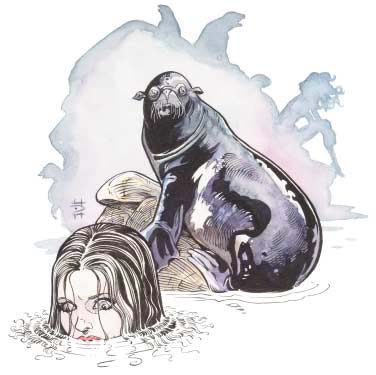

中型类人生物（水生，变形亚种）

| 生命骰： | 3d8 (13 hp) |
| 先攻： | +1 |
| 速度： | 30 英尺，游泳 90 英尺 |
| 防御等级： | 16 (+1 敏捷，+5 天生)，接触 11，措手不及 15（海豹形态）；15 (+1 敏捷，+4 秘银链甲衫)，接触 11，措手不及 14（类人形态） |
| 基本攻击／擒抱： | +2/+1 |
| 攻击： | 啮咬 +3 近战，或秘银长剑 +1 近战 |
| 全力攻击： | 啮咬 +3 近战，或秘银长剑 +1 近战 |
| 伤害： | 啮咬 1d6�C1，秘银长剑 1d8�C1 |
| 面宽／触及： | 5 英尺./5 英尺. |
| 特殊攻击： | ― |
| 特殊能力： | 变化形态 |
| 豁免： | 强韧 +1，反射 +4，意志 +1 |
| 属性： | 力量 9，敏捷 13，体质 11，智力 12，感知 10，魅力 12 |
| 技能： | 工艺（任意一项） +3，聆听 +6，表演（诵唱、音律、歌唱、演讲） +5，侦查 +6，游泳 +11 |
| 专长： | 警觉，武器娴熟 |
| 地域： | 寒冷水域 |
| 组织： | 单独、成对、家庭（3�C10），或部落（12�C30） |
| 挑战等级： | 1 |
| 宝物： | 标准 |
| 阵营： | 通常中立 |
| 进化： | 按职业等级 |
| 等级调整： | +1 |
出现在陆地上时为类人生物，在海中则为海豹，海豹女（selkies）是据称具有精类（fey）血统的变形者，它们与非精类生物的交往常常染上悲剧色彩。
在海豹形态下，海豹女看起来就像普通的海豹，尽管它的眼神通常会透露出一丝智慧的光芒。在类人形态下，海豹女非常像有吸引力的人类，通常拥有灰发灰眼和非常苍白的皮肤。
海豹女对陆地居民怀有深深的好奇心，这常常导致通婚。然而，人类与海豹女的结合很少能幸福地结束，因为海豹女伴侣最终会被重返大海的渴望所征服，抛弃人类伴侣和这段结合生下的任何孩子。半海豹女混血种在几乎所有重大方面都是人类，但可能会有轻微蹼状的手指和脚趾。
海豹女使用通用语（Common）和水族语（Aquan）。
处于原始形态下的海豹女通过啮咬对手来攻击，但它们力量不强，也不喜欢近战。在人类形态下，它们挥舞秘银锻造的武器并穿着秘银盔甲。
变化形态(Alternate Form)(Su)：海豹女对其变形能力的控制有限。在海洋中时，它处于海豹形态；在陆地上时，它处于类人形态。只有在交界之处――海岸的浅水区、狭窄的海滩地带――海豹女才能选择使用哪种形态。改变形态是一个自由动作。类人形态下的海豹女穿戴或携带的装备会变形成为其海豹形态的一部分，并且魔法物品在保持此形态期间停止运转。
技能：海豹女在进行游泳检定以执行特殊动作或避开危险时拥有+8种族加值，并且在进行游泳检定时总是可以选择取10，即使分心或身处险境时也是如此。
海豹女的偏好职业是吟游诗人（bard）。海豹女牧师通常不选择信仰特定的神�o，但能获得医疗（Healing）、保护（Protection）和水（Water）领域。如果牧师选择崇拜特定神�o，则该角色会获得该神�o的领域。
海豹女玩家角色的有效角色等级（Effective Character Level，ECL）等于其职业等级+4。因此，一个 1 级的海豹女吟游诗人的有效角色等级为 5，相当于一个 5 级角色。